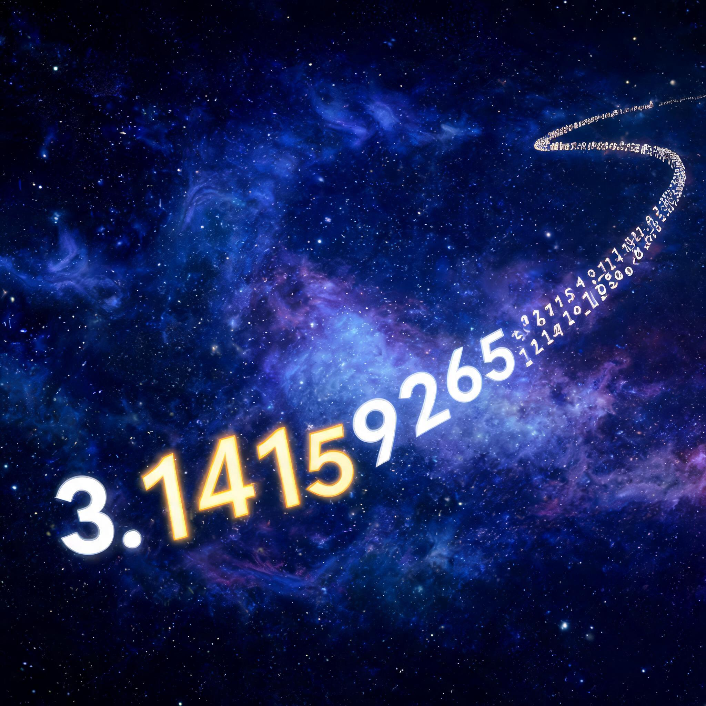

圆周率是无限不循环小数。如果它的数字分布足够「随机」，那么你的银行卡密码、手机号、身份证号，全都藏在里面。输入任意数字，看看它在 π 的第几位。
π 数据状态：加载中...

输入任意纯数字序列（1~12位），在 π 的前100万位小数中搜索它的位置。
或者试试这些场景：
序列越长，在有限位数的 π 中越难找到。6位银行卡密码在100万位中几乎必然存在，但11位手机号就极其渺茫。
| 数据类型 | 位数 | 100万位中找到概率 | 期望出现位置 | 需要的 π 位数 |
|---|---|---|---|---|
| 4位PIN码 | 4 | 99.99% | 第 1万 位 | ~10万位 |
| 6位银行卡密码 | 6 | 63.2% | 第 100万 位 | ~1000万位 |
| 8位日期(如生日) | 8 | 1.0% | 第 1亿 位 | ~10亿位 |
| 11位手机号 | 11 | 0.001% | 第 1000亿 位 | ~1万亿位 |
| 18位身份证号 | 18 | ≈0 | 第 10^18 位 | ~10^19位 |
6位密码（如银行卡密码）在 π 的前100万位中有约 63.2% 的概率被找到。这意味着多数人的银行卡密码确实存在于 π 已经被计算出的部分里。但这并不构成安全威胁——因为你不知道该去哪个位置找它。
GitHub 上有个项目叫 πfs，它的逻辑是：既然 π 包含一切文件，为什么还要用硬盘？只需要记住文件在 π 中的偏移量就行了。输入一句话，体验完整的「存储 → 读取」流程。
πfs 的「100% 压缩」是自欺欺人：为了记住每个字节在 π 中的位置，你需要存储一个偏移量——这个偏移量本身比原始数据还大。更致命的是，要在 π 中找到一个长序列所需的计算量是天文数字级的。存储 1KB 文件需要的计算时间可能超过宇宙年龄。
截至2024年，人类已计算出 π 的前 105 万亿位（StorageReview, 2024）。在这么多位里，不同长度的数字序列各出现了多少次？
在已计算的 105 万亿位 π 中：每个6位密码平均出现约 1.05 亿次；每个8位日期出现约 105 万次；但完整的11位手机号只出现约 1050 次；完整的18位身份证号出现的期望次数约为 10^-4 次——也就是说，大概率还没出现过。
所有论证都基于一个未经证明的猜想：π 是「正规数」。
正规数的定义：在给定进制下，每个数字出现频率相同，每个两位数序列频率也相同，以此类推。
如果 π 是正规数，它就是「析取序列」——任意有限数字串都会出现。
现状：在已计算的 105 万亿位中，0~9 每个数字的出现频率确实非常接近 10%（偏差小于 0.001%）。但数学家至今无法证明 π 是正规数。
| 误解 | 事实 |
|---|---|
| 「无限不循环」= 包含一切 | 错。0.101001000100001... 无限不循环但只含0和1 |
| π 包含莎士比亚全集的ASCII码 | 未证明。理论上可能，实际上找到的概率趋近于零 |
| π 包含一切 = 世界的信息都在里面 | 无意义。随机噪声也「包含」一切，但没有提取信息的方式 |
| 这构成安全威胁 | 不构成。不知道位置就等于不存在。暴力搜索成本远超直接破解 |
让朋友也来找找他们的密码